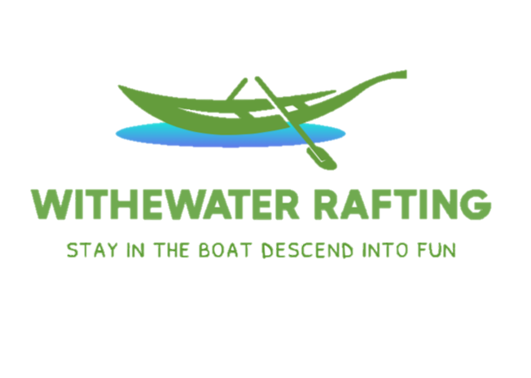

Overview
Purpose
Develop a website for the ease of the user who wants to learn about the rafting experience. An adequate and comfortable space will be made for learning, reservations, and help to attract people's interest in this unique experience.
Audience
This page is directed to people who want to know ore about rafting, people who are in the ages between 12 to 50 years, with the enough posibilities (phisically and economicly), trying to atract them to this wonderful experience.
Branding
Website Logo
Style Guide
Color Palette
Typography
Heading Font: Roboto, serif
Normal Text/Paragraph Example Font: Roboto, serif
Rafting and whitewater rafting are recreational outdoor activities which use an inflatable raft to navigate a river or other body of water. This is often done on whitewater or different degrees of rough water. Dealing with risk is often a part of the experience
Colored Callout Example Font
The main goal is to maneuvur and navigate the raft through rapids or tabulant water , often times taking you over rocks and drops, without capsizing the raft.
Navigation
Wireframes
Home Page Wireframe

About Us Page Wireframe